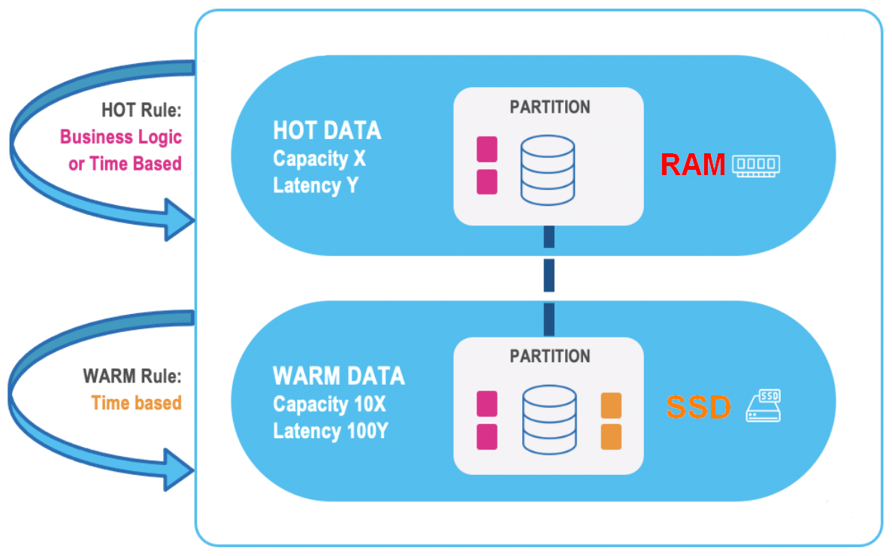
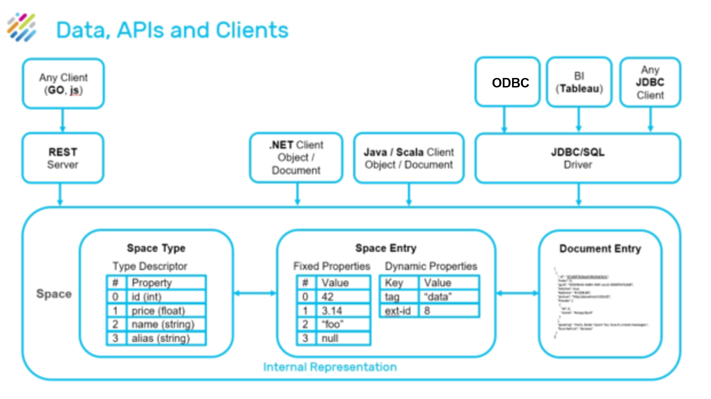
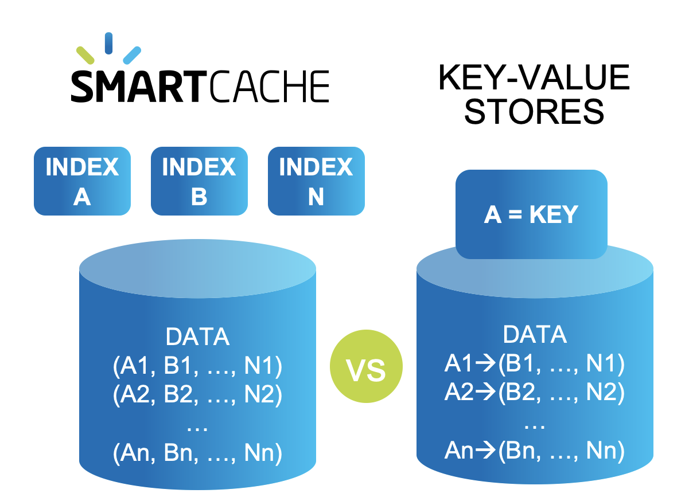

Transaction Processing
Smart Cache provides a powerful solution for launching and running digital services. Its APIs support ultra-fast transaction processing and task execution that is event driven, offering high availability, reliability and scale. Smart Cache’s server side processing accelerates performance and reduces networking and serialization overhead, even during peaks with high numbers of concurrent users. The platform supports both Kubernetes and alternative elastic orchestration systems.
Smart Cache offers efficient and cost-effective data replication across regions and clouds, and between cloud and on-premises deployments. It supports both polling and push notifications, including FIFO and FIFO grouping ordering. Business rules can also be applied locally and remotely as they are embedded in each partition and on remote nodes.
High Availability
Smart Cache is an always-on, ACID-compliant and secured system, with disaster recovery ensured through efficient data replication (Active-Passive) between sites, including hybrid environments.

Highly Available partitions with primary backup instances
High availability is achieved through the following levels with primary and backup instances:
-
Partition Level: Highly-available partitions with synchronic data replication between primary and backup instances for in-memory high availability.
-
Cluster Level: Tier storage and disk persistence, together with built-in mirroring service to an external database or disk, including initial load and store to database, delivering disk persistence to any storage class or database.
-
Site Level: Efficient asynchronous data replication (active-passive or active-active) between sites or regions, including hybrid environment for conflict resolution and disaster recovery.
Multi-Region Replication
Multi-Region Replication is implemented for disaster recovery planning, where each site is distant from the other sites, even on a different continent; for failover scenarios when one site acts as a failover target for another, or to maintain data locality for performance or regulations. For more information, see Multi-Region Replication.
Distributed WAN Gateway
The distributed WAN Gateway enables bidirectional replication of data between cloud repositories or to and from cloud storage. This distributed WAN Gateway is totally stateless, ensuring no loss of data. Transactions at the local site are replicated in atomic manner in the correct order to the remote sites. Site bootstrapping ensures that once a site starts, it can reload its entire data or specific data from a remote site without introducing data consistency problems.
The WAN Gateway replication utilizes a custom plugin that allows users to filter or modify data before it is replicated, and also after it has been replicated at each source or target node. In addition, the WAN replication topology can be updated in runtime - adding or removing remote sites does not result in system shutdown.
Data Tiering
Data is stored in multiple data storage tiers — hot (in-memory), and warm (SSD)
User-defined business rules allows you to place the most important data in hot storage, while other data can be in warm storage.
GigaSpaces manages the full data lifecycle by automatically storing the relevant data in the relevant tiers, federating the queries under the hood to gather all the data in optimal latency and evicting the data according to various policies, from least-recently-used (LRU) to user custom policies. Click here for more information about tiered storage.

Persistence
Smart Cache data persistence consists of two components:
-
Space Data Source: Handles the pre-loading of data and the lazy load of data from from the persistence layer
-
Space Synchronization Endpoint: Handles changes made within the space delegation to the persistence layer
This Space persistence provides classes which can be extended and then used to load and store data in an existing data source. Data is loaded from the data source during space initialization, after which the application works with the space directly.

Smart Cache Persistency Components
Mirror Service
The GigaSpaces mirror service (write behind) provides reliable asynchronous persistence. This allows for the asynchronous delegation of the operations conducted with the In-Memory-Data-Grid (IMDG) into a backend database, significantly reducing the performance overhead. This service ensures that data will not be lost in the event of a failure.
A mirror service can be attached to an application, providing fine-grained control of the objects that need to be persisted, without affecting the real-time portion of the app in either configuration or code. The mirror does not require a backup instance since it does not maintain any state. The actual state of the latest committed database transaction is stored within the primary and the backup space instances, not in the mirror.

Mirror Service (Write Behind)
Scaling
Smart Cache delivers a scaling process that offers almost no downtime while the system scales. This scaling can be performed both horizontally and vertically, enabling the increase or reduction of the number of partitions allocated to a service.
Vertical scaling allows the increase or decrease of the amount of RAM and CPU for an active GigaSpaces cluster – such as the addition of memory or CPUs to an existing physical node - without downtime. Vertical scaling offers many advantages:
Resources are located in close physical proximity, enabling faster access to related data such as credit/debit tables that are updated in a closed (atomic) unit of work
A performance gain, because more RAM and CPUs are available for each update
Horizontal scaling allows adding and reducing the number of partitions used for an application, such as the creation of additional partitions in the same server, or the addition/removal of servers. Horizontal scaling supports linear increases in capacity on-the-fly; RAM or CPU capacity can be increased or decreased while maintaining a constant RAM/CPU ratio.
Smart Cache supports the full SQL-99 standard, allowing complex queries to be performed with optimal speed and minimal memory footprint. Standard SQL requests used for relational data manipulation can be used without requiring source code changes. Using Java and .NET APIs, advanced capabilities are available — such as object store, and various data modeling options.
APIs

Smart Cache APIs
Smart Cache supports the full SQL-99 standard, allowing complex queries to be performed with optimal speed and minimal memory footprint. Standard SQL requests used for relational data manipulation can be used without requiring source code changes.
Using Java and .NET APIs, advanced capabilities are available — such as object store, and various data modeling options.
REST-API and command line interfaces are also available.
Smart Cache can easily integrate with BI tools such as Tableau, Looker, and PowerBI.
Advanced Indexing
Smart Cache provides unlimited amount of secondary indexes for the stored data, such as Exact, Range, Collections, Compound, Text, and Geo Spatial for optimal performance.
Unlike key-value stores that need to duplicate the entire data store for each defined index, GigaSpaces only creates additional indexing data structures on one instance of data.

Smart Cache advanced indexing
Customized Routing
When the objects are written to the Data Grid, they are routed to the proper partition, according to a predefined attribute in the object that acts as the routing index.